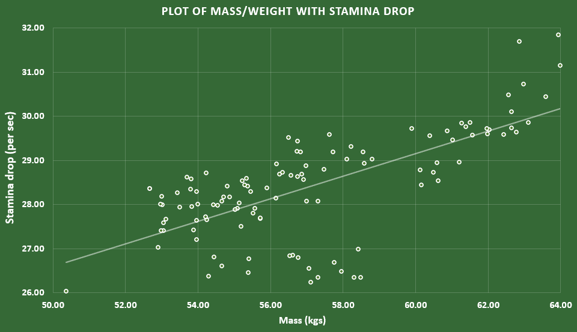
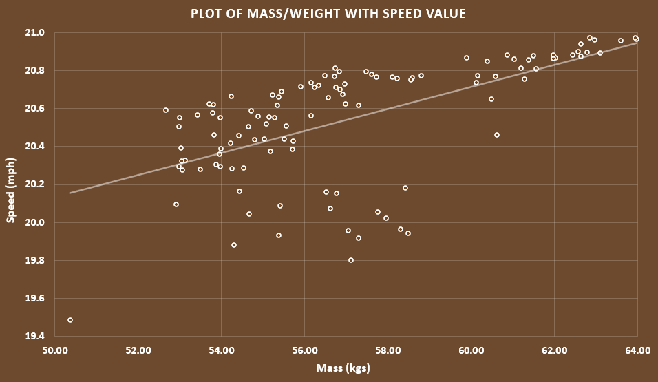
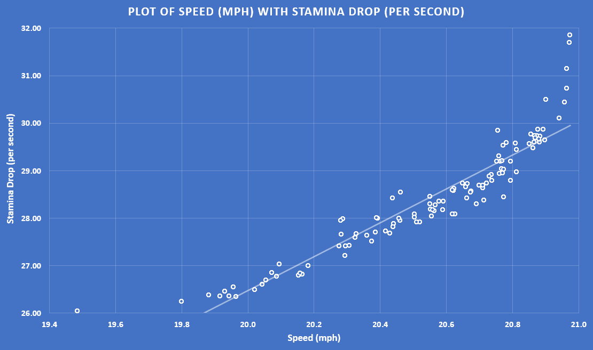

Data Portfolio Card

Name: Angelica the Data Wizard
📊 "Turning numbers into stories" 📊
Description:
Statistically likely to be your best hire.
Last updated: 9th June 2025
📊 "Turning numbers into stories" 📊
Description:
Statistically likely to be your best hire.
Last updated: 9th June 2025

Key learnings: Dataset creation, python skills, data visualisation, data entry, dataset conventions
Description: Time-captured sample of digital horses and their phenotypic and performance metrics, analysed and visualised through simple data visualisations.




